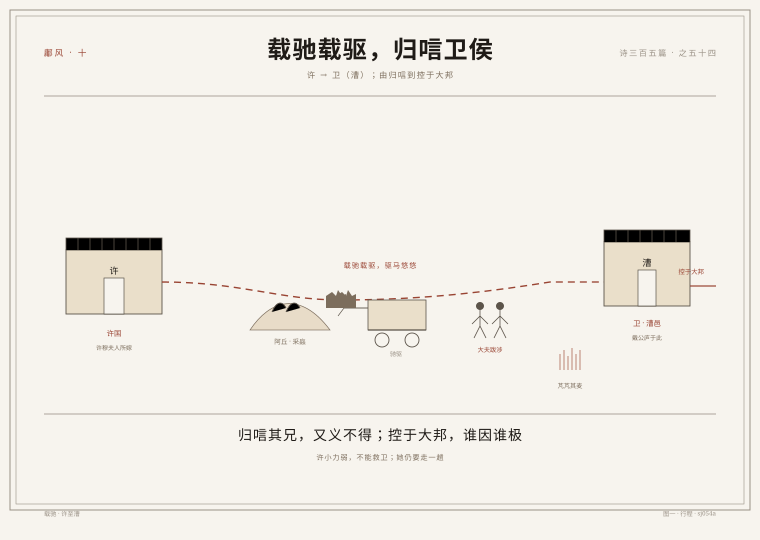
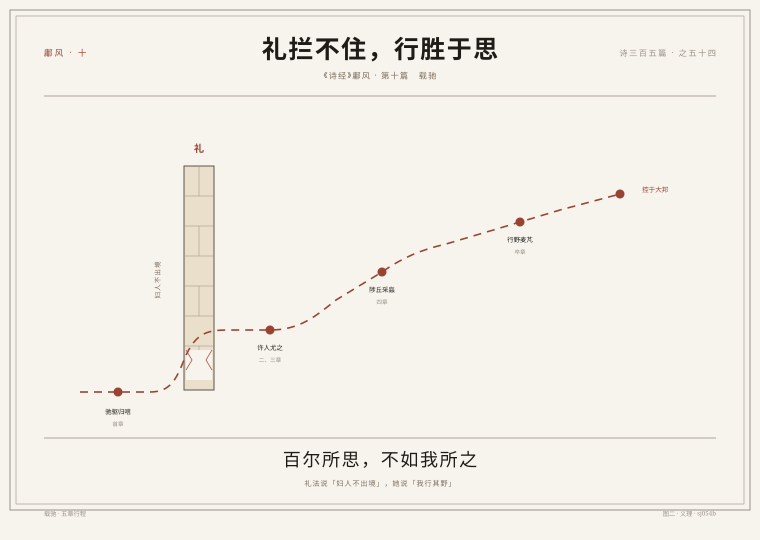

第五十四篇 载驰
鄘风 · 之十 SJ054
朗读 · 普通话
依经文正文朗读，句读从文；不配乐、不改速、不加拖腔。全库同一音色（豆包 TTS），非播音员录制。
一 解题
诗三判：
- 谁在说：许穆夫人自己。第一人称，「我」字反复；不是他人代作。
- 说什么事：卫为狄人所灭，戴公庐于漕；她从许驰驱归唁，许大夫追阻；她不肯回，最后要「控于大邦」。
- 为何编在此：鄘风末篇。前九篇由守、讳、刺、桑间、名分、复国、止奔、无礼、礼贤；此篇以许穆夫人归唁收卷。由礼到义，由义到行。
《毛序》：「《载驰》，许穆夫人作也。闵其宗国颠覆，自伤不能救也。卫懿公为狄人所灭，国人分散，露于漕邑。许穆夫人闵卫之亡，伤许之小，力不能救，思归唁其兄，又义不得，故赋是诗也。」
朱子《诗集传》：「许穆夫人作也。闵卫之亡，驰驱而归，将以唁卫侯于漕邑。未至，而许之大夫有奔走跋涉而来者，夫人知其必将以不可归之义来告，故心以为忧也。既而终不果归，乃作此诗以自言其意尔。」
本库的看法：这首诗的狠，在「百尔所思，不如我所之」：你们想了一百种，不如我走一趟。
礼法说「妇人不出境」，她说「我行其野」。
二 经文
第一章
载驰载驱，归唁卫侯。驱马悠悠，言至于漕。大夫跋涉，我心则忧。
第二章
既不我嘉，不能旋反。视尔不臧，我思不远。
第三章
既不我嘉，不能旋济。视尔不臧，我思不閟。
第四章
陟彼阿丘，言采其蝱。女子善怀，亦各有行。许人尤之，众稚且狂。
第五章
我行其野，芃芃其麦。控于大邦，谁因谁极？大夫君子，无我有尤。百尔所思，不如我所之。
分章：五章，章六、四、四、六、八句。
章末韵：
- 一章：驱、侯（侯部）；悠、漕、忧（幽部）。
- 二章：反、远（元部）。
- 三章：济、閟（脂、物合韵，姑从旧读）。
- 四章：蝱、行、狂（阳部）。
- 五章：麦、极（职部）；尤、之（之部）；之职合韵。
三 韵读
| 一 |
驱、侯；悠、漕、忧 |
侯部；幽部 |
| 二 |
反、远 |
元部 |
| 三 |
济、閟 |
脂、物合韵 |
| 四 |
蝱、行、狂 |
阳部 |
| 五 |
麦、极；尤、之 |
职部；之部（之职合韵） |
一章两韵：驱、侯一收，悠、漕、忧一放；由许出国，马行愈远。二、三章短促，四句一转，像被拦住的喘息。四章转阳部，登丘采药，声亦高。五章「麦、极」入声收，转到「尤、之」平声，最后一句「不如我所之」，把气放尽。
四 字义与名物
字义
- 载——发语词；郑笺「载之言则」。
- 驰 / 驱——走马谓之驰，策马谓之驱；驰驱，疾行。
- 唁（yàn）——吊失国曰唁；慰问遭亡国之祸者。
- 卫侯——卫戴公申；一说卫文公。
- 悠悠——远貌。
- 言——语助词；于，往。
- 漕（cáo）——卫东邑；戴公庐于此。
- 大夫——许国大夫追来劝阻；一说卫大夫来告难。
- 跋涉——草行曰跋，水行曰涉。
- 既——尽、都。
- 嘉——善、赞许。
- 旋——回；反，返。
- 臧（zāng）——善。
- 远——远离；「我思不远」，我的思念不离卫。
- 济——止；一说渡水。
- 閟（bì）——闭；「我思不閟」，我的思念不能被关闭。
- 阿丘——偏高之丘。
- 蝱（méng）——贝母；药草，可疗疾。
- 善怀——多思。
- 行——道。
- 尤——过、责。
- 稚——幼小；狂，狂狷、狂妄。
- 芃芃（péng）——茂盛。
- 控——引、赴告；因，依；极，至。
- 所之——所往；一说所思。
名物
- 漕——卫东邑；戴公庐于漕，卫之遗民暂居于此。
- 阿丘——偏高的山丘；登丘采蝱，以疗心疾。
- 蝱（贝母）——药草；古人以贝母疗郁结。
- 麦——芃芃方盛；麦未收，民将困。
- 大邦——大国；可能指齐。
五 今译
第一章
快马加鞭，回去吊唁卫侯。驱马远行，到了漕邑。许国大夫跋山涉水追来，我心里忧愁。
第二章
既然都不赞许我，我不能回返。看你们不施善道救卫，我的思念不离卫。
第三章
既然都不赞许我，我不能止步。看你们不施善道救卫，我的思念不能被关闭。
第四章
登上那偏高的阿丘，采那贝母。女子多思，也各有自己的道。许人责怪我，众人幼稚又狂妄。
第五章
我走在卫国的田野，麦子茂盛。我要赴告大国，依靠谁、到谁那里？大夫君子，不要责怪我。你们百种思虑，不如我亲自走一趟。
六 章旨
一章：驰驱归唁，至漕；大夫跋涉，我心忧。
归心似箭，追者已至。
二章：既不我嘉，不能旋反；视尔不臧，我思不远。
你们不许，我不能回；我的思念不离卫。
三章：既不我嘉，不能旋济；视尔不臧，我思不閟。
你们不许，我不能止；我的思念关不住。
四章：陟丘采蝱；女子善怀，各有行；许人尤之，众稚且狂。
登高采药，以疗心忧；女子多思，也有道。
五章：行野麦芃；控于大邦；大夫君子无我有尤；百尔所思，不如我所之。
由思到行；你们想，我去。
五章合看：驰驱—受阻—登丘—行野—控大邦；礼法愈拦，行愈坚。
七 诗教
- 赋：直陈行程、对话、登丘、行野；赋而叙事。
- 观：观许穆夫人之志；也观「礼」与「义」的冲突：妇人不出境
vs 宗国灭亡。
- 群：可与「国破家亡仍要回去」的人同群；也可与「被礼法拦住」的人同群。
- 怨：怨在「许人尤之，众稚且狂」；不是怨许人，是怨他们不懂。
八 分寸与边界
- 不可把「载驰载驱」只当出游。它是归唁、救亡；马蹄下面是一个亡国。
- 不可把「许穆夫人」只当「爱国女诗人」。她首先是卫国的女儿、许国的夫人；身份撕裂，才有这首诗。
- 不可把「礼」与「义」简单对立。许人拦她，有礼法；她行，有义；诗两存，才有张力。
- 不可把「控于大邦」只当求援。它也是「赴告」，把卫亡告诉霸主；可能指向齐。
- 不可把「百尔所思，不如我所之」当赌气。它是决断；思不如行。
九 存疑
- 诗旨与作者：毛序、朱子皆系许穆夫人；《列女传》亦载其驰归吊唁。或疑非许穆夫人作。本库从毛、朱。
- 文字异文：「閟」或作「闭」；「蝱」或作「莔」；「众稚且狂」或作「众穉且狂」；「无我有尤」或作「无我有訧」。
- 名物歧解：漕＝卫东邑；阿丘＝偏高之丘；蝱＝贝母；芃芃＝茂盛；大邦＝齐（或泛称大国）；卫侯＝戴公（一说文公）。
- 身世异说：毛诗正义谓戴公与许穆夫人俱公子顽烝于宣姜所生；《列女传》谓「卫懿公之女」。两说不同，本库从毛诗正义，兼记《列女传》。
- 年代与编次：公元前六六〇年狄灭卫；戴公庐漕；许穆夫人归唁；齐桓公使公子无亏帅车三百乘、甲士三千人戍漕；后文公迁楚丘。为何殿鄘风？由礼到义，由义到行；也可能是卫诗组。
十 跨典
- 《鄘风·干旄》：前篇礼贤，此篇归唁；一礼，一义。
- 《鄘风·定之方中》：前篇文公复国，此篇戴公庐漕；一复国，一亡国。
- 《左传·闵公二年》：「卫之遗民男女七百有三十人……立戴公以庐于曹。许穆夫人赋《载驰》。齐侯使公子无亏帅车三百乘、甲士三千人以戍曹。」史与诗互证。
- 《列女传·许穆夫人》：许穆夫人初欲嫁齐，卫懿公嫁之于许；卫亡，许小不能救；她驰归吊唁，许人不听，作《载驰》。
- 《卫风·木瓜》：齐桓公救卫，卫人思报；此篇「控于大邦」，正是求援。
- 《论语·季氏》：「危而不持，颠而不扶，则将焉用彼相矣。」礼法之臣，不能扶颠；许穆夫人自己去扶。
十一 双卡与图
双卡五对：
| 载驰载驱（驰马疾驱） |
载歌载舞（误） |
| 归唁（吊失国） |
归宴（误） |
| 漕（卫邑） |
漕运（误） |
| 蝱（贝母） |
蚊虫（误） |
| 控于大邦（赴告求援） |
控制大国（误） |

图一 · 许至漕：载驰载驱，归唁卫侯 行程图

图二 · 礼拦不住，行胜于思 义理图
读图三处：
- 许至漕：图一左许右漕；一条虚线，是归唁的路；中间「大夫跋涉」，是拦她的人。
- 阿丘与麦：图一丘上采蝱，漕旁麦芃；一疗心疾，一见民困。
- 礼墙与行路：图二一道礼墙，五个节点；墙有裂口，路穿墙而过；最后「控于大邦」。